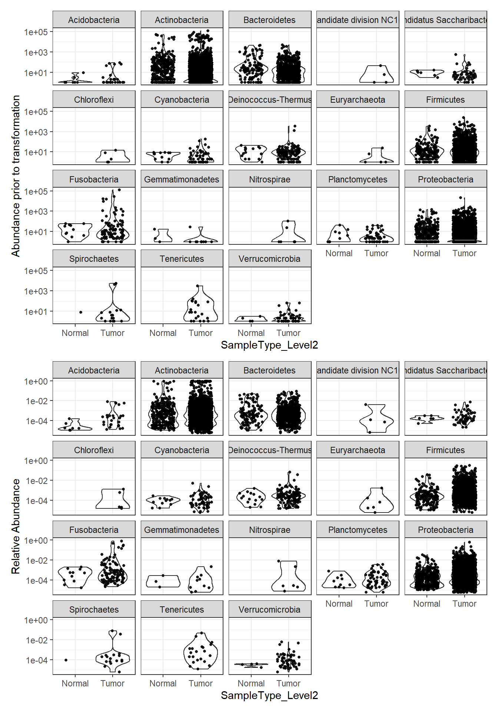
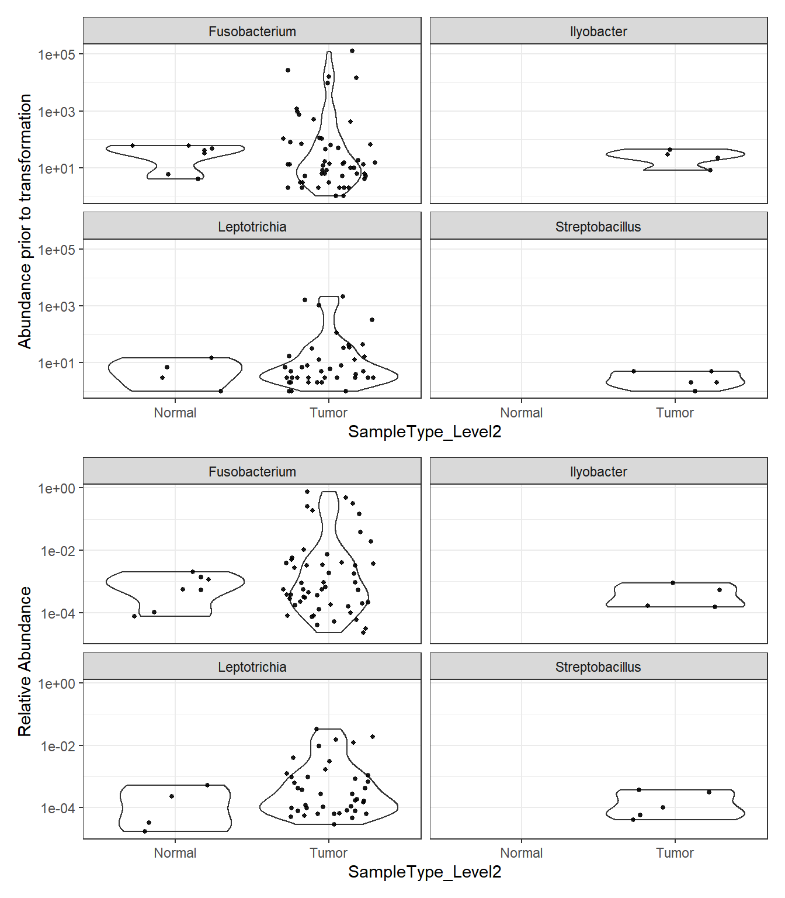

TCGA: Data Processing, Checking, and Exploration
Last updated: 2020-10-08
Checks: 6 1
Knit directory: esoph-micro-cancer-workflow/
This reproducible R Markdown analysis was created with workflowr (version 1.6.2). The Checks tab describes the reproducibility checks that were applied when the results were created. The Past versions tab lists the development history.
The R Markdown file has unstaged changes. To know which version of the R Markdown file created these results, you’ll want to first commit it to the Git repo. If you’re still working on the analysis, you can ignore this warning. When you’re finished, you can run wflow_publish to commit the R Markdown file and build the HTML.
Great job! The global environment was empty. Objects defined in the global environment can affect the analysis in your R Markdown file in unknown ways. For reproduciblity it’s best to always run the code in an empty environment.
The command set.seed(20200916) was run prior to running the code in the R Markdown file. Setting a seed ensures that any results that rely on randomness, e.g. subsampling or permutations, are reproducible.
Great job! Recording the operating system, R version, and package versions is critical for reproducibility.
Nice! There were no cached chunks for this analysis, so you can be confident that you successfully produced the results during this run.
Great job! Using relative paths to the files within your workflowr project makes it easier to run your code on other machines.
Great! You are using Git for version control. Tracking code development and connecting the code version to the results is critical for reproducibility.
The results in this page were generated with repository version 67ac872. See the Past versions tab to see a history of the changes made to the R Markdown and HTML files.
Note that you need to be careful to ensure that all relevant files for the analysis have been committed to Git prior to generating the results (you can use wflow_publish or wflow_git_commit). workflowr only checks the R Markdown file, but you know if there are other scripts or data files that it depends on. Below is the status of the Git repository when the results were generated:
Ignored files:
Ignored: .Rhistory
Ignored: .Rproj.user/
Ignored: data/
Unstaged changes:
Modified: analysis/data_processing_nci_umd.Rmd
Modified: analysis/data_processing_tcga.Rmd
Modified: code/get_data.R
Note that any generated files, e.g. HTML, png, CSS, etc., are not included in this status report because it is ok for generated content to have uncommitted changes.
These are the previous versions of the repository in which changes were made to the R Markdown (analysis/data_processing_tcga.Rmd) and HTML (docs/data_processing_tcga.html) files. If you’ve configured a remote Git repository (see ?wflow_git_remote), click on the hyperlinks in the table below to view the files as they were in that past version.
| File | Version | Author | Date | Message |
|---|---|---|---|---|
| html | 67ac872 | noah-padgett | 2020-09-24 | Build site. |
| Rmd | 498a050 | noah-padgett | 2020-09-24 | updated data processing |
| Rmd | ec3d151 | noah-padgett | 2020-09-24 | updated processing files |
For the TCGA data, data need to be processed twice. First, for the RNAseq microbiome data. Next, for the WGS microbiome data. When you try to do both at the same time, then there is a mismatch among cases with respect to the number of samples that were generated for each case.
This page contains the investigation of the raw data (OTUs) to identify if outliers are present or whether other issues emerge that may influence our results in unexpected ways. This file goes through the following checks:
- Removal of Phylum NA features
- Computation of total and average prevalence in each Phylum
- Removal Phyla with 1% or less of all samples
- Computation of total read count for each Phyla
- Plotting taxa prevalence vs total counts - identify a natural threshold if clear, if not use 5%
- Merging taxa to genus rank/level
- Abundance Value Transformations
- Plotting of abundance values by “SampleType_Level2: Tumor, Normal” before transformation and after
RNAseq Data: Taxonomic Filtering
0. Sample Reads, Totals, and Rarifying
sampleReads <- phyloseq::sample_sums(phylo.data.tcga.RNAseq)
# Total quality Reads
sum(sampleReads)[1] 30487334# Average reads
mean(sampleReads)[1] 461929.3# max sequencing depth
max(sampleReads)[1] 2377000# rarified to an even depth of
phylo.data.tcga <- phyloseq::rarefy_even_depth(phylo.data.tcga.RNAseq, replace = T, rngseed = 20200923)`set.seed(20200923)` was used to initialize repeatable random subsampling.Please record this for your records so others can reproduce.Try `set.seed(20200923); .Random.seed` for the full vector...52OTUs were removed because they are no longer
present in any sample after random subsampling...# even depth of:
phyloseq::sample_sums(phylo.data.tcga) TCGA.2H.A9GF.Tumor.RNAseq.579 TCGA.2H.A9GJ.Tumor.RNAseq.a43
18157 18157
TCGA.IG.A3I8.Tumor.RNAseq.f83 TCGA.IG.A3QL.Tumor.RNAseq.85d
18157 18157
TCGA.IG.A3YA.Tumor.RNAseq.66a TCGA.IG.A3YC.Tumor.RNAseq.276
18157 18157
TCGA.IG.A4P3.Tumor.RNAseq.50d TCGA.IG.A4QS.Tumor.RNAseq.542
18157 18157
TCGA.IG.A50L.Tumor.RNAseq.93f TCGA.IG.A5B8.Tumor.RNAseq.3b2
18157 18157
TCGA.IG.A5S3.Tumor.RNAseq.200 TCGA.IG.A625.Tumor.RNAseq.096
18157 18157
TCGA.JY.A93C.Tumor.RNAseq.3ba TCGA.L5.A43C.Normal.RNAseq.ffd
18157 18157
TCGA.L5.A43C.Tumor.RNAseq.5fe TCGA.L5.A43E.Tumor.RNAseq.6bb
18157 18157
TCGA.L5.A43J.Tumor.RNAseq.64f TCGA.L5.A4OE.Tumor.RNAseq.0e5
18157 18157
TCGA.L5.A4OF.Normal.RNAseq.4cb TCGA.L5.A4OG.Normal.RNAseq.76d
18157 18157
TCGA.L5.A4OG.Tumor.RNAseq.ef4 TCGA.L5.A4OH.Tumor.RNAseq.0ce
18157 18157
TCGA.L5.A4OJ.Normal.RNAseq.d64 TCGA.L5.A4OJ.Tumor.RNAseq.17c
18157 18157
TCGA.L5.A4OM.Tumor.RNAseq.9d2 TCGA.L5.A4ON.Tumor.RNAseq.2e8
18157 18157
TCGA.L5.A4OO.Normal.RNAseq.646 TCGA.L5.A4OO.Tumor.RNAseq.1f1
18157 18157
TCGA.L5.A4OP.Tumor.RNAseq.6be TCGA.L5.A4OQ.Normal.RNAseq.c24
18157 18157
TCGA.L5.A4OR.Normal.RNAseq.22f TCGA.L5.A4OS.Tumor.RNAseq.85f
18157 18157
TCGA.L5.A4OT.Tumor.RNAseq.71d TCGA.L5.A4OU.Tumor.RNAseq.df3
18157 18157
TCGA.L5.A4OW.Tumor.RNAseq.e8e TCGA.L5.A4OX.Tumor.RNAseq.c54
18157 18157
TCGA.L5.A8NS.Tumor.RNAseq.69a TCGA.L7.A56G.Tumor.RNAseq.70a
18157 18157
TCGA.LN.A49M.Tumor.RNAseq.d16 TCGA.LN.A49O.Tumor.RNAseq.d4f
18157 18157
TCGA.LN.A49P.Tumor.RNAseq.346 TCGA.LN.A49S.Tumor.RNAseq.0a9
18157 18157
TCGA.LN.A49U.Tumor.RNAseq.450 TCGA.LN.A49W.Tumor.RNAseq.dfd
18157 18157
TCGA.LN.A49X.Tumor.RNAseq.36d TCGA.LN.A49Y.Tumor.RNAseq.32b
18157 18157
TCGA.LN.A4A1.Tumor.RNAseq.ffd TCGA.LN.A4A3.Tumor.RNAseq.7ab
18157 18157
TCGA.LN.A4A4.Tumor.RNAseq.fc5 TCGA.LN.A4A5.Tumor.RNAseq.11e
18157 18157
TCGA.LN.A4A8.Tumor.RNAseq.e2a TCGA.LN.A4A9.Tumor.RNAseq.cc6
18157 18157
TCGA.LN.A4MQ.Tumor.RNAseq.5b4 TCGA.LN.A5U5.Tumor.RNAseq.ef4
18157 18157
TCGA.LN.A5U6.Tumor.RNAseq.c00 TCGA.LN.A5U7.Tumor.RNAseq.88b
18157 18157
TCGA.M9.A5M8.Tumor.RNAseq.4ef TCGA.Q9.A6FW.Tumor.RNAseq.d88
18157 18157
TCGA.R6.A6DN.Tumor.RNAseq.7ed TCGA.R6.A6DQ.Tumor.RNAseq.a41
18157 18157
TCGA.R6.A6KZ.Tumor.RNAseq.22d TCGA.R6.A6L4.Tumor.RNAseq.19e
18157 18157
TCGA.R6.A8W8.Tumor.RNAseq.fb2 TCGA.R6.A8WC.Tumor.RNAseq.64b
18157 18157
TCGA.S8.A6BV.Tumor.RNAseq.86b TCGA.S8.A6BW.Tumor.RNAseq.802
18157 18157 1. Removal of Phylum NA features
# show ranks
phyloseq::rank_names(phylo.data.tcga)[1] "Kingdom" "Phylum" "Class" "Order" "Family" "Genus" # table of features for each phylum
table(phyloseq::tax_table(phylo.data.tcga)[,"Phylum"], exclude=NULL)
Acidobacteria Actinobacteria
5 137
Aquificae Bacteroidetes
1 57
candidate division NC10 Candidatus Saccharibacteria
1 3
Chloroflexi Cyanobacteria
1 9
Deinococcus-Thermus Euryarchaeota
11 1
Firmicutes Fusobacteria
172 5
Gemmatimonadetes Nitrospirae
1 1
Planctomycetes Proteobacteria
5 299
Spirochaetes Tenericutes
6 8
Verrucomicrobia
4 Note that no taxa were labels as NA so none were removed.
2. Computation of total and average prevalence in each Phylum
# compute prevalence of each feature
prevdf <- apply(X=phyloseq::otu_table(phylo.data.tcga),
MARGIN= ifelse(phyloseq::taxa_are_rows(phylo.data.tcga), yes=1, no=2),
FUN=function(x){sum(x>0)})
# store as data.frame with labels
prevdf <- data.frame(Prevalence=prevdf,
TotalAbundance=phyloseq::taxa_sums(phylo.data.tcga),
phyloseq::tax_table(phylo.data.tcga))Compute the totals and averages abundances.
totals <- plyr::ddply(prevdf, "Phylum",
function(df1){
A <- cbind(mean(df1$Prevalence), sum(df1$Prevalence))
colnames(A) <- c("Average", "Total")
A
}
) # end
totals Phylum Average Total
1 Acidobacteria 1.400000 7
2 Actinobacteria 16.576642 2271
3 Aquificae 1.000000 1
4 Bacteroidetes 10.368421 591
5 candidate division NC10 2.000000 2
6 Candidatus Saccharibacteria 10.333333 31
7 Chloroflexi 1.000000 1
8 Cyanobacteria 2.444444 22
9 Deinococcus-Thermus 6.272727 69
10 Euryarchaeota 3.000000 3
11 Firmicutes 12.110465 2083
12 Fusobacteria 13.800000 69
13 Gemmatimonadetes 2.000000 2
14 Nitrospirae 2.000000 2
15 Planctomycetes 2.800000 14
16 Proteobacteria 16.053512 4800
17 Spirochaetes 2.666667 16
18 Tenericutes 3.000000 24
19 Verrucomicrobia 2.500000 10Any of the taxa under a total of 100 may be suspect. First, we will remove the taxa that are clearly too low in abundance (<=5).
filterPhyla <- totals$Phylum[totals$Total <= 5, drop=T] # drop allows some of the attributes to be removed
phylo.data1 <- phyloseq::subset_taxa(phylo.data.tcga, !Phylum %in% filterPhyla)
phylo.data1phyloseq-class experiment-level object
otu_table() OTU Table: [ 721 taxa and 66 samples ]
sample_data() Sample Data: [ 66 samples by 43 sample variables ]
tax_table() Taxonomy Table: [ 721 taxa by 6 taxonomic ranks ]Next, we explore the taxa in more detail next as we move to remove some of these low abundance taxa.
3. Removal Phyla with 1% or less of all samples (prevalence filtering)
prevdf1 <- subset(prevdf, Phylum %in% phyloseq::get_taxa_unique(phylo.data1, "Phylum"))4. Total count computation
# already done above ()5. Threshold identification
ggplot(prevdf1, aes(TotalAbundance+1,
Prevalence/nsamples(phylo.data.tcga))) +
geom_hline(yintercept=0.01, alpha=0.5, linetype=2)+
geom_point(size=2, alpha=0.75) +
scale_x_log10()+
labs(x="Total Abundance", y="Prevalance [Frac. Samples]")+
facet_wrap(.~Phylum) + theme(legend.position = "none")
Note: for plotting purposes, a \(+1\) was added to all TotalAbundances to avoid a taking the log of 0.
Next, we define a prevalence threshold, that way the taxa can be pruned to a prespecified level. In this study, we used 0.01 (1%) of total samples.
prevalenceThreshold <- 0.01*(phyloseq::nsamples(phylo.data.tcga))
prevalenceThreshold[1] 0.66# execute the filtering to this level
keepTaxa <- rownames(prevdf1)[(prevdf1$Prevalence >= prevalenceThreshold)]
phylo.data2 <- phyloseq::prune_taxa(keepTaxa, phylo.data1)6. Merge taxa (to genus level)
genusNames <- phyloseq::get_taxa_unique(phylo.data2, "Genus")
#phylo.data3 <- merge_taxa(phylo.data2, genusNames, genusNames[which.max(taxa_sums(phylo.data2)[genusNames])])
# How many genera would be present after filtering?
length(phyloseq::get_taxa_unique(phylo.data2, taxonomic.rank = "Genus"))[1] 354## [1] 144
phylo.data3 = phyloseq::tax_glom(phylo.data2, "Genus", NArm = TRUE)7. Relative Adbundance Plot
plot_abundance = function(physeq, title = "", ylab="Abundance"){
mphyseq = phyloseq::psmelt(physeq)
mphyseq <- subset(mphyseq, Abundance > 0)
ggplot(data = mphyseq, aes(x=SampleType_Level2, y=Abundance)) +
geom_violin(fill = NA) +
geom_point(size = 1, alpha = 0.9,
position = position_jitter(width = 0.3)) +
scale_y_log10()+
labs(y=ylab)+
theme(legend.position="none")
}
# Transform to relative abundance. Save as new object.
phylo.data3ra = transform_sample_counts(phylo.data3, function(x){x / sum(x)})
plotBefore = plot_abundance(phylo.data3, ylab="Abundance prior to transformation")
plotAfter = plot_abundance(phylo.data3ra, ylab="Relative Abundance")
# Combine each plot into one graphic.
plotBefore + plotAfter + plot_layout(nrow=2)
8. Plotting Abundance
Abundance by Phylum
plot_abundance = function(physeq, title = "", Facet = "Phylum",
ylab="Abundance"){
mphyseq = phyloseq::psmelt(physeq)
mphyseq <- subset(mphyseq, Abundance > 0)
ggplot(data = mphyseq, aes(x=SampleType_Level2, y=Abundance)) +
geom_violin(fill = NA) +
geom_point(size = 1, alpha = 0.9,
position = position_jitter(width = 0.3)) +
facet_wrap(facets = Facet) + scale_y_log10()+
labs(y=ylab)+
theme(legend.position="none")
}
plotBefore = plot_abundance(phylo.data3, ylab="Abundance prior to transformation")
plotAfter = plot_abundance(phylo.data3ra, ylab="Relative Abundance")
# Combine each plot into one graphic.
plotBefore + plotAfter + plot_layout(nrow=2)
Phylum: Bacteroidetes
plot_abundance = function(physeq, title = "",
Facet = "Phylum",
ylab="Abundance"){
mphyseq = phyloseq::subset_taxa(physeq, Phylum %in% "Bacteroidetes")
mphyseq <- phyloseq::psmelt(mphyseq)
mphyseq <- subset(mphyseq, Abundance > 0)
ggplot(data = mphyseq, aes(x=SampleType_Level2, y=Abundance)) +
geom_violin(fill = NA) +
geom_point(size = 1, alpha = 0.9,
position = position_jitter(width = 0.3)) +
facet_wrap(facets = Facet) + scale_y_log10()+
labs(y=ylab)+
theme(legend.position="none")
}
plotBefore = plot_abundance(phylo.data3,
ylab="Abundance prior to transformation")
plotAfter = plot_abundance(phylo.data3ra,
ylab="Relative Abundance")
plotBefore + plotAfter + plot_layout(nrow=2)
Phylum: Firmicutes
plot_abundance = function(physeq, title = "", Facet = "Class", ylab="Abundance"){
mphyseq = phyloseq::subset_taxa(physeq, Phylum %in% "Firmicutes")
mphyseq <- phyloseq::psmelt(mphyseq)
mphyseq <- subset(mphyseq, Abundance > 0)
ggplot(data = mphyseq, aes(x=SampleType_Level2, y=Abundance)) +
geom_violin(fill = NA) +
geom_point(size = 1, alpha = 0.9,
position = position_jitter(width = 0.3)) +
facet_wrap(facets = Facet) + scale_y_log10()+
labs(y=ylab)+
theme(legend.position="none")
}
plotBefore = plot_abundance(phylo.data3,
ylab="Abundance prior to transformation")
plotAfter = plot_abundance(phylo.data3ra,
ylab="Relative Abundance")
plotBefore + plotAfter + plot_layout(nrow=2)
Phylum: Fusobacteria
plot_abundance = function(physeq, title = "", Facet = "Class", ylab="Abundance"){
mphyseq = phyloseq::subset_taxa(physeq, Phylum %in% "Fusobacteria")
mphyseq <- phyloseq::psmelt(mphyseq)
mphyseq <- subset(mphyseq, Abundance > 0)
ggplot(data = mphyseq, aes(x=SampleType_Level2, y=Abundance)) +
geom_violin(fill = NA) +
geom_point(size = 1, alpha = 0.9,
position = position_jitter(width = 0.3)) +
facet_wrap(facets = Facet) + scale_y_log10()+
labs(y=ylab)+
theme(legend.position="none")
}
plotBefore = plot_abundance(phylo.data3,
ylab="Abundance prior to transformation")
plotAfter = plot_abundance(phylo.data3ra,
ylab="Relative Abundance")
plotBefore + plotAfter + plot_layout(nrow=2)
Phylum: Proteobacteria
plot_abundance = function(physeq, title = "", Facet = "Class", ylab="Abundance"){
mphyseq = phyloseq::subset_taxa(physeq, Phylum %in% "Proteobacteria")
mphyseq <- phyloseq::psmelt(mphyseq)
mphyseq <- subset(mphyseq, Abundance > 0)
ggplot(data = mphyseq, aes(x=SampleType_Level2, y=Abundance)) +
geom_violin(fill = NA) +
geom_point(size = 1, alpha = 0.9,
position = position_jitter(width = 0.3)) +
facet_wrap(facets = Facet) + scale_y_log10()+
labs(y=ylab)+
theme(legend.position="none")
}
plotBefore = plot_abundance(phylo.data3,
ylab="Abundance prior to transformation")
plotAfter = plot_abundance(phylo.data3ra,
ylab="Relative Abundance")
plotBefore + plotAfter + plot_layout(nrow=2)
WGS Data: Taxonomic Filtering
0. Sample Reads, Totals, and Rarifying
sampleReads <- sample_sums(phylo.data.tcga.WGS)
# Total quality Reads
sum(sampleReads)[1] 3817495# Average reads
mean(sampleReads)[1] 31036.54# max sequencing depth
max(sampleReads)[1] 559963# rarified to an even depth of
phylo.data.tcga <- phylo.data.tcga.WGS #rarefy_even_depth(phylo.data.tcga.WGS, replace = T, rngseed = 20200923)
# even depth of:
sample_sums(phylo.data.tcga)TCGA.IG.A3I8.Normal.WGS.222 TCGA.IG.A3I8.Normal.WGS.a07
412 447
TCGA.IG.A3I8.Tumor.WGS.d45 TCGA.IG.A3QL.Normal.WGS.e64
1576 42617
TCGA.IG.A3QL.Tumor.WGS.da1 TCGA.IG.A3Y9.Normal.WGS.dbf
6268 34517
TCGA.IG.A3Y9.Tumor.WGS.c2e TCGA.IG.A3YA.Normal.WGS.30a
24967 40161
TCGA.IG.A3YA.Tumor.WGS.d20 TCGA.IG.A3YB.Normal.WGS.be8
23320 26565
TCGA.IG.A3YB.Tumor.WGS.6b5 TCGA.IG.A3YB.Tumor.WGS.aac
22708 52711
TCGA.IG.A3YC.Normal.WGS.42f TCGA.IG.A3YC.Tumor.WGS.a12
23137 15430
TCGA.IG.A4P3.Normal.WGS.905 TCGA.IG.A4P3.Tumor.WGS.a5b
2740 2206
TCGA.IG.A4QT.Normal.WGS.555 TCGA.IG.A4QT.Tumor.WGS.4bf
4023 4020
TCGA.IG.A50L.Normal.WGS.076 TCGA.IG.A50L.Tumor.WGS.3e7
5095 289811
TCGA.IG.A51D.Normal.WGS.780 TCGA.IG.A51D.Tumor.WGS.c42
12504 12472
TCGA.IG.A5B8.Normal.WGS.bbd TCGA.IG.A5B8.Tumor.WGS.948
6999 7698
TCGA.IG.A5S3.Normal.WGS.035 TCGA.IG.A5S3.Tumor.WGS.736
214 290
TCGA.IG.A97I.Normal.WGS.900 TCGA.JY.A93C.Tumor.WGS.f40
33031 35048
TCGA.L5.A43C.Normal.WGS.311 TCGA.L5.A43C.Tumor.WGS.f5b
21546 12862
TCGA.L5.A43E.Normal.WGS.280 TCGA.L5.A43E.Normal.WGS.56f
40554 47251
TCGA.L5.A43E.Tumor.WGS.70d TCGA.L5.A43H.Normal.WGS.d67
11531 49147
TCGA.L5.A43H.Tumor.WGS.f8c TCGA.L5.A43I.Normal.WGS.293
28611 40707
TCGA.L5.A43I.Tumor.WGS.dee TCGA.L5.A43J.Normal.WGS.e99
8126 26652
TCGA.L5.A43J.Tumor.WGS.ed6 TCGA.L5.A43M.Normal.WGS.ec5
6627 369
TCGA.L5.A43M.Tumor.WGS.4e3 TCGA.L5.A4OE.Normal.WGS.a69
1478 12714
TCGA.L5.A4OE.Tumor.WGS.498 TCGA.L5.A4OF.Normal.WGS.948
2948 18579
TCGA.L5.A4OF.Tumor.WGS.0b3 TCGA.L5.A4OF.Tumor.WGS.3ee
4369 79921
TCGA.L5.A4OG.Normal.WGS.963 TCGA.L5.A4OG.Tumor.WGS.cef
165 260
TCGA.L5.A4OH.Normal.WGS.418 TCGA.L5.A4OH.Tumor.WGS.ba8
2963 650
TCGA.L5.A4OI.Normal.WGS.600 TCGA.L5.A4OI.Tumor.WGS.61f
42067 5504
TCGA.L5.A4OJ.Normal.WGS.3de TCGA.L5.A4OJ.Normal.WGS.9dc
86175 63
TCGA.L5.A4OJ.Tumor.WGS.b81 TCGA.L5.A4OM.Normal.WGS.6cb
114841 220
TCGA.L5.A4OM.Tumor.WGS.206 TCGA.L5.A4ON.Normal.WGS.076
184 1378
TCGA.L5.A4ON.Tumor.WGS.9bb TCGA.L5.A4OP.Normal.WGS.6e4
316 169
TCGA.L5.A4OP.Tumor.WGS.940 TCGA.L5.A4OS.Normal.WGS.643
96 14416
TCGA.L5.A4OS.Tumor.WGS.5c0 TCGA.L5.A4OT.Normal.WGS.2a1
112066 8373
TCGA.L5.A4OT.Tumor.WGS.7d4 TCGA.L5.A891.Normal.WGS.9fa
42262 269777
TCGA.L5.A891.Tumor.WGS.6a8 TCGA.L5.A8NE.Normal.WGS.da6
559963 25856
TCGA.L7.A56G.Normal.WGS.706 TCGA.L7.A56G.Tumor.WGS.8e8
2946 173707
TCGA.LN.A49K.Normal.WGS.46d TCGA.LN.A49K.Tumor.WGS.acf
28461 15830
TCGA.LN.A49L.Normal.WGS.99b TCGA.LN.A49L.Normal.WGS.c79
1793 37639
TCGA.LN.A49L.Tumor.WGS.a95 TCGA.LN.A49L.Tumor.WGS.a9a
30608 8660
TCGA.LN.A49M.Normal.WGS.86f TCGA.LN.A49M.Tumor.WGS.821
6224 5518
TCGA.LN.A49N.Normal.WGS.aa8 TCGA.LN.A49N.Tumor.WGS.cc2
69332 39430
TCGA.LN.A49O.Normal.WGS.0e9 TCGA.LN.A49O.Tumor.WGS.e46
78468 33726
TCGA.LN.A49P.Normal.WGS.09a TCGA.LN.A49P.Tumor.WGS.bc9
57063 21648
TCGA.LN.A49R.Normal.WGS.427 TCGA.LN.A49R.Tumor.WGS.94a
898 14897
TCGA.LN.A49S.Normal.WGS.a7e TCGA.LN.A49S.Tumor.WGS.f17
12081 8885
TCGA.LN.A49U.Normal.WGS.bc2 TCGA.LN.A49U.Tumor.WGS.c07
5318 51386
TCGA.LN.A49V.Normal.WGS.693 TCGA.LN.A49V.Tumor.WGS.331
22949 34529
TCGA.LN.A49W.Normal.WGS.cfd TCGA.LN.A49W.Tumor.WGS.30b
3514 2374
TCGA.LN.A49X.Normal.WGS.36d TCGA.LN.A49X.Tumor.WGS.e3d
5414 3022
TCGA.LN.A49Y.Normal.WGS.859 TCGA.LN.A49Y.Normal.WGS.902
7802 2661
TCGA.LN.A49Y.Tumor.WGS.61d TCGA.LN.A4A1.Normal.WGS.774
526 13062
TCGA.LN.A4A2.Normal.WGS.851 TCGA.LN.A4A2.Tumor.WGS.2f7
16038 14355
TCGA.LN.A4A3.Normal.WGS.bee TCGA.LN.A4A3.Tumor.WGS.e04
3899 172865
TCGA.LN.A4A4.Normal.WGS.200 TCGA.LN.A4A4.Normal.WGS.c72
6580 33938
TCGA.LN.A4A4.Tumor.WGS.8f2 TCGA.LN.A4A6.Normal.WGS.298
1302 2142
TCGA.LN.A4A6.Tumor.WGS.113 TCGA.LN.A4A8.Normal.WGS.3df
1280 3468
TCGA.LN.A4A8.Tumor.WGS.fd3 TCGA.LN.A4MQ.Normal.WGS.51c
1688 9082
TCGA.LN.A4MQ.Tumor.WGS.beb TCGA.LN.A4MR.Normal.WGS.a1b
3647 1810
TCGA.LN.A4MR.Tumor.WGS.6c3 TCGA.LN.A5U5.Normal.WGS.25f
2753 3029
TCGA.LN.A5U5.Normal.WGS.e87 TCGA.LN.A5U5.Tumor.WGS.d38
21262 2427
TCGA.LN.A5U5.Tumor.WGS.ee1 TCGA.LN.A8I1.Normal.WGS.e4b
181294 16143
TCGA.LN.A8I1.Tumor.WGS.70b TCGA.LN.A9FQ.Normal.WGS.432
23999 25536
TCGA.V5.A7RC.Normal.WGS.a0c
35844 1. Removal of Phylum NA features
# show ranks
rank_names(phylo.data.tcga)[1] "Kingdom" "Phylum" "Class" "Order" "Family" "Genus" # table of features for each phylum
table(tax_table(phylo.data.tcga)[,"Phylum"], exclude=NULL)
Acidobacteria Actinobacteria
5 142
Aquificae Bacteroidetes
1 62
candidate division NC10 Candidatus Saccharibacteria
1 3
Chloroflexi Cyanobacteria
1 11
Deinococcus-Thermus Euryarchaeota
12 1
Firmicutes Fusobacteria
181 5
Gemmatimonadetes Nitrospirae
1 1
Planctomycetes Proteobacteria
6 321
Spirochaetes Tenericutes
6 14
Verrucomicrobia
5 Note that no taxa were labels as NA so none were removed.
2. Computation of total and average prevalence in each Phylum
# compute prevalence of each feature
prevdf <- apply(X=otu_table(phylo.data.tcga),
MARGIN= ifelse(taxa_are_rows(phylo.data.tcga), yes=1, no=2),
FUN=function(x){sum(x>0)})
# store as data.frame with labels
prevdf <- data.frame(Prevalence=prevdf,
TotalAbundance=taxa_sums(phylo.data.tcga),
tax_table(phylo.data.tcga))Compute the totals and averages abundances.
totals <- plyr::ddply(prevdf, "Phylum",
function(df1){
A <- cbind(mean(df1$Prevalence), sum(df1$Prevalence))
colnames(A) <- c("Average", "Total")
A
}
) # end
totals Phylum Average Total
1 Acidobacteria 2.400000 12
2 Actinobacteria 13.190141 1873
3 Aquificae 2.000000 2
4 Bacteroidetes 14.790323 917
5 candidate division NC10 3.000000 3
6 Candidatus Saccharibacteria 61.666667 185
7 Chloroflexi 2.000000 2
8 Cyanobacteria 13.454545 148
9 Deinococcus-Thermus 4.833333 58
10 Euryarchaeota 1.000000 1
11 Firmicutes 13.696133 2479
12 Fusobacteria 25.600000 128
13 Gemmatimonadetes 6.000000 6
14 Nitrospirae 4.000000 4
15 Planctomycetes 8.500000 51
16 Proteobacteria 13.875389 4454
17 Spirochaetes 11.166667 67
18 Tenericutes 5.500000 77
19 Verrucomicrobia 5.400000 27Any of the taxa under a total of 100 may be suspect. First, we will remove the taxa that are clearly too low in abundance (<=5).
filterPhyla <- totals$Phylum[totals$Total <= 5, drop=T] # drop allows some of the attributes to be removed
phylo.data1 <- subset_taxa(phylo.data.tcga, !Phylum %in% filterPhyla)
phylo.data1phyloseq-class experiment-level object
otu_table() OTU Table: [ 774 taxa and 123 samples ]
sample_data() Sample Data: [ 123 samples by 43 sample variables ]
tax_table() Taxonomy Table: [ 774 taxa by 6 taxonomic ranks ]Next, we explore the taxa in more detail next as we move to remove some of these low abundance taxa.
3. Removal Phyla with 1% or less of all samples (prevalence filtering)
prevdf1 <- subset(prevdf, Phylum %in% get_taxa_unique(phylo.data1, "Phylum"))4. Total count computation
# already done above ()5. Threshold identification
ggplot(prevdf1, aes(TotalAbundance+1,
Prevalence/nsamples(phylo.data.tcga))) +
geom_hline(yintercept=0.01, alpha=0.5, linetype=2)+
geom_point(size=2, alpha=0.75) +
scale_x_log10()+
labs(x="Total Abundance", y="Prevalance [Frac. Samples]")+
facet_wrap(.~Phylum) + theme(legend.position = "none")
Note: for plotting purposes, a \(+1\) was added to all TotalAbundances to avoid a taking the log of 0.
Next, we define a prevalence threshold, that way the taxa can be pruned to a prespecified level. In this study, we used 0.01 (1%) of total samples.
prevalenceThreshold <- 0.01*nsamples(phylo.data.tcga)
prevalenceThreshold[1] 1.23# execute the filtering to this level
keepTaxa <- rownames(prevdf1)[(prevdf1$Prevalence >= prevalenceThreshold)]
phylo.data2 <- prune_taxa(keepTaxa, phylo.data1)6. Merge taxa (to genus level)
genusNames <- get_taxa_unique(phylo.data2, "Genus")
#phylo.data3 <- merge_taxa(phylo.data2, genusNames, genusNames[which.max(taxa_sums(phylo.data2)[genusNames])])
# How many genera would be present after filtering?
length(get_taxa_unique(phylo.data2, taxonomic.rank = "Genus"))[1] 358## [1] 371
phylo.data3 = tax_glom(phylo.data2, "Genus", NArm = TRUE)7. Relative Adbundance Plot
plot_abundance = function(physeq, title = "", ylab="Abundance"){
mphyseq = psmelt(physeq)
mphyseq <- subset(mphyseq, Abundance > 0)
ggplot(data = mphyseq, aes(x=SampleType_Level2, y=Abundance)) +
geom_violin(fill = NA) +
geom_point(size = 1, alpha = 0.9,
position = position_jitter(width = 0.3)) +
scale_y_log10()+
labs(y=ylab)+
theme(legend.position="none")
}
# Transform to relative abundance. Save as new object.
phylo.data3ra = transform_sample_counts(phylo.data3, function(x){x / sum(x)})
plotBefore = plot_abundance(phylo.data3, ylab="Abundance prior to transformation")
plotAfter = plot_abundance(phylo.data3ra, ylab="Relative Abundance")
# Combine each plot into one graphic.
plotBefore + plotAfter + plot_layout(nrow=2)8. Plotting Abundance
Abundance by Phylum
plot_abundance = function(physeq, title = "", Facet = "Phylum", ylab="Abundance"){
mphyseq <- phyloseq::psmelt(physeq)
mphyseq <- subset(mphyseq, Abundance > 0)
ggplot(data = mphyseq, aes(x=SampleType_Level2, y=Abundance)) +
geom_violin(fill = NA) +
geom_point(size = 1, alpha = 0.9,
position = position_jitter(width = 0.3)) +
facet_wrap(facets = Facet) + scale_y_log10()+
labs(y=ylab)+
theme(legend.position="none")
}
plotBefore = plot_abundance(phylo.data3,
ylab="Abundance prior to transformation")
plotAfter = plot_abundance(phylo.data3ra,
ylab="Relative Abundance")
plotBefore + plotAfter + plot_layout(nrow=2)
Phylum: Bacteroidetes
plot_abundance = function(physeq, title = "", Facet = "Class", ylab="Abundance"){
mphyseq = phyloseq::subset_taxa(physeq, Phylum %in% "Bacteroidetes")
mphyseq <- phyloseq::psmelt(mphyseq)
mphyseq <- subset(mphyseq, Abundance > 0)
ggplot(data = mphyseq, aes(x=SampleType_Level2, y=Abundance)) +
geom_violin(fill = NA) +
geom_point(size = 1, alpha = 0.9,
position = position_jitter(width = 0.3)) +
facet_wrap(facets = Facet) + scale_y_log10()+
labs(y=ylab)+
theme(legend.position="none")
}
plotBefore = plot_abundance(phylo.data3,
ylab="Abundance prior to transformation")
plotAfter = plot_abundance(phylo.data3ra,
ylab="Relative Abundance")
plotBefore + plotAfter + plot_layout(nrow=2)
Phylum: Firmicutes
plot_abundance = function(physeq, title = "", Facet = "Class", ylab="Abundance"){
mphyseq = phyloseq::subset_taxa(physeq, Phylum %in% "Firmicutes")
mphyseq <- phyloseq::psmelt(mphyseq)
mphyseq <- subset(mphyseq, Abundance > 0)
ggplot(data = mphyseq, aes(x=SampleType_Level2, y=Abundance)) +
geom_violin(fill = NA) +
geom_point(size = 1, alpha = 0.9,
position = position_jitter(width = 0.3)) +
facet_wrap(facets = Facet) + scale_y_log10()+
labs(y=ylab)+
theme(legend.position="none")
}
plotBefore = plot_abundance(phylo.data3,
ylab="Abundance prior to transformation")
plotAfter = plot_abundance(phylo.data3ra,
ylab="Relative Abundance")
plotBefore + plotAfter + plot_layout(nrow=2)
Phylum: Fusobacteria
plot_abundance = function(physeq, title = "", Facet = "Class", ylab="Abundance"){
mphyseq = phyloseq::subset_taxa(physeq, Phylum %in% "Fusobacteria")
mphyseq <- phyloseq::psmelt(mphyseq)
mphyseq <- subset(mphyseq, Abundance > 0)
ggplot(data = mphyseq, aes(x=SampleType_Level2, y=Abundance)) +
geom_violin(fill = NA) +
geom_point(size = 1, alpha = 0.9,
position = position_jitter(width = 0.3)) +
facet_wrap(facets = Facet) + scale_y_log10()+
labs(y=ylab)+
theme(legend.position="none")
}
plotBefore = plot_abundance(phylo.data3,
ylab="Abundance prior to transformation")
plotAfter = plot_abundance(phylo.data3ra,
ylab="Relative Abundance")
plotBefore + plotAfter + plot_layout(nrow=2)
Phylum: Proteobacteria
plot_abundance = function(physeq, title = "", Facet = "Class", ylab="Abundance"){
mphyseq = phyloseq::subset_taxa(physeq, Phylum %in% "Proteobacteria")
mphyseq <- phyloseq::psmelt(mphyseq)
mphyseq <- subset(mphyseq, Abundance > 0)
ggplot(data = mphyseq, aes(x=SampleType_Level2, y=Abundance)) +
geom_violin(fill = NA) +
geom_point(size = 1, alpha = 0.9,
position = position_jitter(width = 0.3)) +
facet_wrap(facets = Facet) + scale_y_log10()+
labs(y=ylab)+
theme(legend.position="none")
}
plotBefore = plot_abundance(phylo.data3,
ylab="Abundance prior to transformation")
plotAfter = plot_abundance(phylo.data3ra,
ylab="Relative Abundance")
plotBefore + plotAfter + plot_layout(nrow=2)
sessionInfo()R version 4.0.2 (2020-06-22)
Platform: x86_64-w64-mingw32/x64 (64-bit)
Running under: Windows 10 x64 (build 18362)
Matrix products: default
locale:
[1] LC_COLLATE=English_United States.1252
[2] LC_CTYPE=English_United States.1252
[3] LC_MONETARY=English_United States.1252
[4] LC_NUMERIC=C
[5] LC_TIME=English_United States.1252
attached base packages:
[1] stats graphics grDevices utils datasets methods base
other attached packages:
[1] car_3.0-8 carData_3.0-4 gvlma_1.0.0.3 patchwork_1.0.1
[5] viridis_0.5.1 viridisLite_0.3.0 gridExtra_2.3 xtable_1.8-4
[9] kableExtra_1.1.0 plyr_1.8.6 data.table_1.13.0 readxl_1.3.1
[13] forcats_0.5.0 stringr_1.4.0 dplyr_1.0.1 purrr_0.3.4
[17] readr_1.3.1 tidyr_1.1.1 tibble_3.0.3 ggplot2_3.3.2
[21] tidyverse_1.3.0 lmerTest_3.1-2 lme4_1.1-23 Matrix_1.2-18
[25] vegan_2.5-6 lattice_0.20-41 permute_0.9-5 phyloseq_1.32.0
[29] workflowr_1.6.2
loaded via a namespace (and not attached):
[1] minqa_1.2.4 colorspace_1.4-1 rio_0.5.16
[4] ellipsis_0.3.1 rprojroot_1.3-2 XVector_0.28.0
[7] fs_1.5.0 rstudioapi_0.11 farver_2.0.3
[10] fansi_0.4.1 lubridate_1.7.9 xml2_1.3.2
[13] codetools_0.2-16 splines_4.0.2 knitr_1.29
[16] ade4_1.7-15 jsonlite_1.7.0 nloptr_1.2.2.2
[19] broom_0.7.0 cluster_2.1.0 dbplyr_1.4.4
[22] BiocManager_1.30.10 compiler_4.0.2 httr_1.4.2
[25] backports_1.1.7 assertthat_0.2.1 cli_2.0.2
[28] later_1.1.0.1 htmltools_0.5.0 tools_4.0.2
[31] igraph_1.2.5 gtable_0.3.0 glue_1.4.1
[34] reshape2_1.4.4 Rcpp_1.0.5 Biobase_2.48.0
[37] cellranger_1.1.0 vctrs_0.3.2 Biostrings_2.56.0
[40] multtest_2.44.0 ape_5.4 nlme_3.1-148
[43] iterators_1.0.12 xfun_0.16 openxlsx_4.1.5
[46] rvest_0.3.6 lifecycle_0.2.0 statmod_1.4.34
[49] zlibbioc_1.34.0 MASS_7.3-51.6 scales_1.1.1
[52] hms_0.5.3 promises_1.1.1 parallel_4.0.2
[55] biomformat_1.16.0 rhdf5_2.32.2 curl_4.3
[58] yaml_2.2.1 stringi_1.4.6 S4Vectors_0.26.1
[61] foreach_1.5.0 BiocGenerics_0.34.0 zip_2.0.4
[64] boot_1.3-25 rlang_0.4.7 pkgconfig_2.0.3
[67] evaluate_0.14 Rhdf5lib_1.10.1 labeling_0.3
[70] tidyselect_1.1.0 magrittr_1.5 R6_2.4.1
[73] IRanges_2.22.2 generics_0.0.2 DBI_1.1.0
[76] foreign_0.8-80 pillar_1.4.6 haven_2.3.1
[79] whisker_0.4 withr_2.2.0 mgcv_1.8-31
[82] abind_1.4-5 survival_3.2-3 modelr_0.1.8
[85] crayon_1.3.4 rmarkdown_2.3 grid_4.0.2
[88] blob_1.2.1 git2r_0.27.1 reprex_0.3.0
[91] digest_0.6.25 webshot_0.5.2 httpuv_1.5.4
[94] numDeriv_2016.8-1.1 stats4_4.0.2 munsell_0.5.0